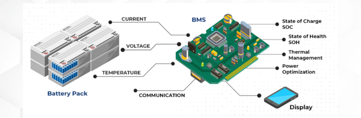
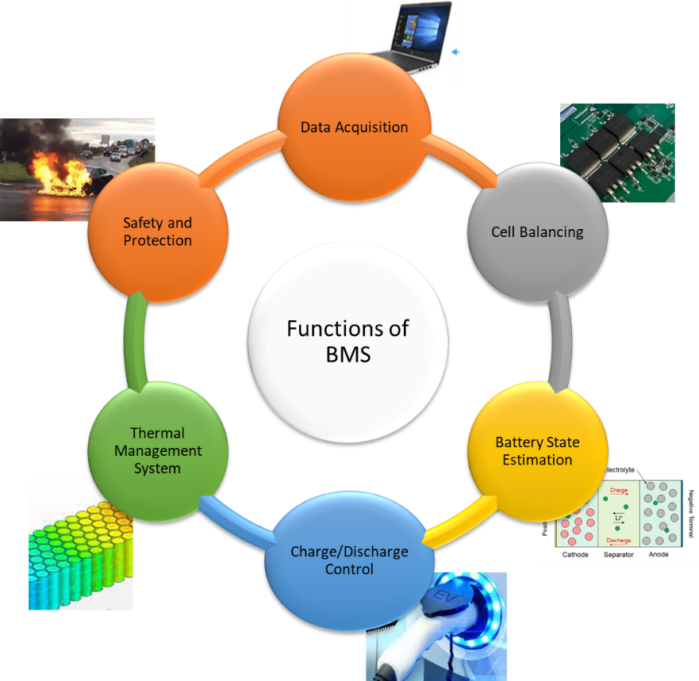
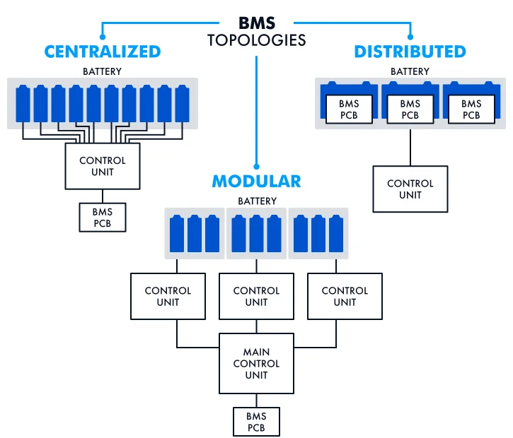
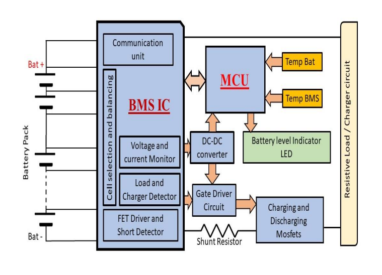
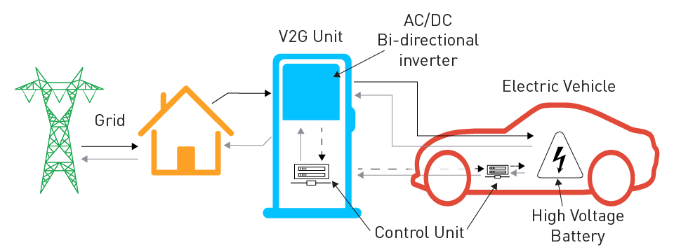

The rise of electric vehicles (EVs) has ushered in an era of sustainable transportation, but it also presents unique challenges, particularly in managing the complex interplay of numerous battery cells within the vehicle. This is where the Battery Management System (BMS) emerges as a critical component, ensuring the safe, efficient, and reliable operation of the electric vehicle.
Understanding the Importance of BMS
Electric vehicle batteries typically consist of numerous individual cells connected in series and parallel to achieve the desired voltage and capacity. However, manufacturing variations and operating conditions can lead to inconsistencies in the performance of individual cells. This can result in:
- Uneven Charging: Some cells may overcharge while others remain undercharged, leading to capacity degradation and potential safety hazards.
- Temperature Imbalances: Uneven temperatures within the battery pack can accelerate aging, reduce performance, and even cause thermal runaway.
- Reduced Battery Life: Inconsistent cell performance can significantly shorten the overall lifespan of the battery pack.
The BMS addresses these challenges by acting as the "brain" of the battery pack, constantly monitoring and managing its behavior.

Key Functions of a BMS
A comprehensive BMS performs a multitude of critical functions:
- Real-time Monitoring: Continuously monitors vital parameters of each individual cell, including voltage, current, and temperature.
- State Estimation: Accurately estimates the State of Charge (SOC), State of Health (SOH), and remaining useful life of the battery pack. SOC indicates the amount of energy currently available, while SOH reflects the overall health and degradation of the battery.
- Cell Balancing: Actively balances the charge levels of individual cells by employing techniques like passive (dissipating excess energy) or active (redistributing energy between cells) methods. This ensures consistent performance and maximizes the overall capacity of the battery pack.
- Thermal Management: Monitors and controls battery temperatures to prevent overheating or overcooling, optimizing battery performance and safety.
- Safety Mechanisms: Implements robust safety protocols to prevent overcharging, over-discharging, short circuits, and other potential hazards.
- Communication: Enables seamless communication with other vehicle systems, such as the motor controller, the vehicle control unit (VCU), and the charging system, through communication protocols like CAN bus.
- Fault Diagnosis: Detects and isolates faults within the battery pack, such as cell failures, communication errors, and sensor malfunctions, enabling timely maintenance and repairs.

BMS Architecture: Centralized vs. Distributed
- Centralized BMS: A single control unit manages the entire battery pack. This architecture is simpler and more cost-effective, suitable for smaller battery packs in applications like power tools and some smaller EVs.
- Distributed BMS: Employs multiple control units distributed throughout the battery pack. This architecture is more scalable and offers enhanced fault tolerance, making it suitable for large-scale battery packs in high-performance EVs and energy storage systems.

Critical Considerations in BMS Design
Isolation:
- Power Isolation: Utilizing isolated DC-DC converters is crucial to electrically isolate the BMS circuitry from the high-voltage battery pack. This prevents ground loops and ensures the safety of the electronic components.
- Signal Isolation: Employing isolated CAN transceivers is essential for reliable communication within the vehicle's electrical network. These devices provide galvanic isolation, preventing ground loops and suppressing electromagnetic interference (EMI), ensuring robust and error-free communication.
High-Voltage Safety:
- The BMS must incorporate robust safety mechanisms to protect against high-voltage hazards, including overcurrent protection, short-circuit protection, and overvoltage/under-voltage protection.

Future Trends in BMS Technology
- Artificial Intelligence (AI) and Machine Learning: Integrating AI/ML algorithms into BMS can enhance predictive maintenance capabilities, improve battery health estimation, and optimize charging strategies.
- Advanced Communication Protocols: Exploring advanced communication protocols beyond CAN, such as Ethernet and 5G, for faster and more reliable data exchange.
- Integration with Vehicle-to-Grid (V2G) Technologies: Enabling bidirectional power flow, allowing EVs to both draw power from the grid and feed excess energy back into the grid.

Conclusion
The BMS plays a pivotal role in ensuring the safety, performance, and longevity of electric vehicle batteries. By continuously monitoring and managing battery behavior, the BMS optimizes energy utilization, extends battery life, and enhances the overall driving experience. As the demand for electric vehicles continues to grow, advancements in BMS technology will be crucial for driving innovation and accelerating the transition to sustainable transportation.